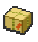
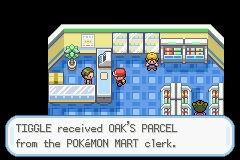
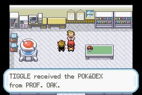
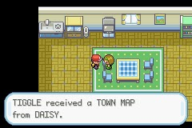
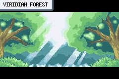

บทที่ 3 / 29
โทคิวะซิตี้<Viridian City>
❖
ให้เราเข้าไปรักษาโปเกมอนที่Pokemon Center(สำหรับคนที่โปเกมอนจวนจะตายแล้วนะ) แล้วไปที่Shop (เป็นร้านขายของต่างๆ มีสัญลักษณ์หน้าร้านเขียนไว้ว่าShopกำกับไว้อยู่) คุยกับคนขายของ จะให้เรานำOak’s Parcel ไปส่ง ดร.ออร์คิด

หน้าตาของ Oak’s Parcel

พอคุยเสร็จแล้ว ให้เราเดินไปทิศใต้ และกลับไปที่มาซาร่าทาวน์ แล้วเข้าห้องวิจัย คุยกับ ดร.เพื่อมอบของแก่เขา เราจะได้Pokedex ไว้ดูโปเกมอนต่างๆที่เราเจอ และเราจับได้ และมอนสเตอร์บอล<Pokeball> 5 ลูกเอาไว้จับโปเกมอน

เข้าไปในบ้านที่อยู่ตรงข้ามบ้านเรา ซึ่งเป็นบ้านของคู่แข่ง คุยกับคนในบ้าน จะได้Town Map มา เป็นแผนที่ทั้งหมดในเกม ซึ่งเราสามารถดูได้ในกระเป๋าช่อง Key Items

จากนั้นให้เราเดินไปโทคิวะซิตี้เหมือนเดิม เดินไปทางซ้ายของเมืองถนน22 จะพบกับคู่แข่งอีกครั้งหนึ่ง เขาจะสู้กับเราด้วยโปเกมอน2ตัว (เลเวล9 จะสู้หรือไม่สู้ก็ได้) จากนั้นตรงขึ้นทางทิศเหนือ จะมีคนแก่คนหนึ่งสอนวิธี จับโปเกมอน แล้วจะมอบ Teachy TV (เป็น Key Item ที่สอนเทคนิคการต่อสู้ง่ายๆชนิดพื้นฐาน) ผ่านถนนหมายเลข2 ซึ่งมีป่าโทคิวะ<Viridian Forest>อยู่ระหว่างทาง (ก่อนผ่าน เข้าร้านShopไปซื้อบอลและยาแก้พิษไว้ก่อนก็ดี) ป่าที่เราต้องผ่าน ก็จะมีเทรนเนอร์มาสู้ด้วย ไม่มีอะไรซับซ้อน ผ่านได้ค่อนข้างง่าย ให้เราหาทางออก และไปเมืองนิบิซิตี้
